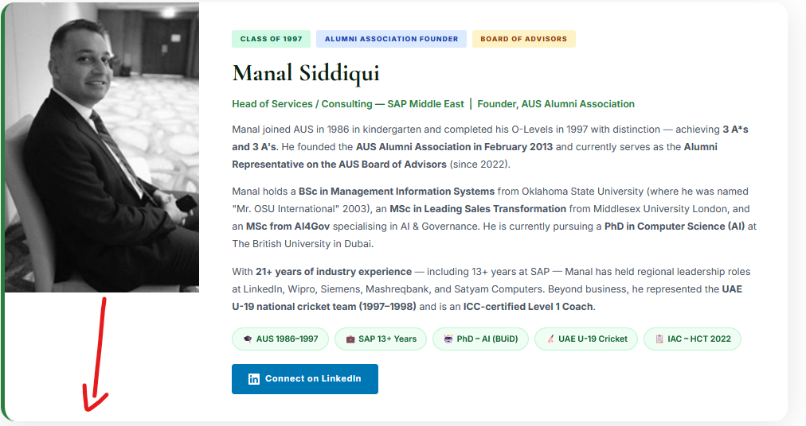

Extraordinary graduates who carry the AUS spirit into every corner of the world — doctors, engineers, architects, entrepreneurs and more.
Our alumni community spans the globe, representing the very best of what a best-value British education can achieve. From Dubai to London, New York to Singapore — AUS graduates are making their mark.

Head of Services / Consulting — SAP Middle East | Founder, AUS Alumni Association
Manal joined AUS in 1986 in kindergarten and completed his O-Levels in 1997 with distinction — achieving 3 A*s and 3 A's. He founded the AUS Alumni Association in February 2013 and currently serves as the Alumni Representative on the AUS Board of Advisors (since 2022).
Manal holds a BSc in Management Information Systems from Oklahoma State University (where he was named "Mr. OSU International" 2003), an MSc in Leading Sales Transformation from Middlesex University London, and an MSc from AI4Gov specialising in AI & Governance. He is currently pursuing a PhD in Computer Science (AI) at The British University in Dubai.
With 21+ years of industry experience — including 13+ years at SAP — Manal has held regional leadership roles at LinkedIn, Wipro, Siemens, Mashreqbank, and Satyam Computers. Beyond business, he represented the UAE U-19 national cricket team (1997–1998) and is an ICC-certified Level 1 Coach.
Connect on LinkedIn